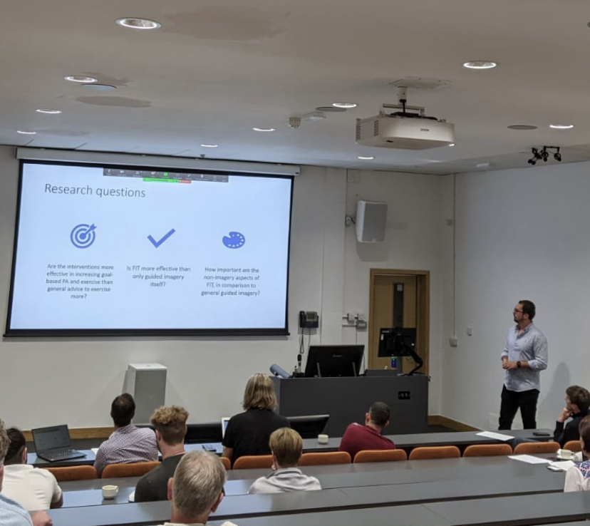
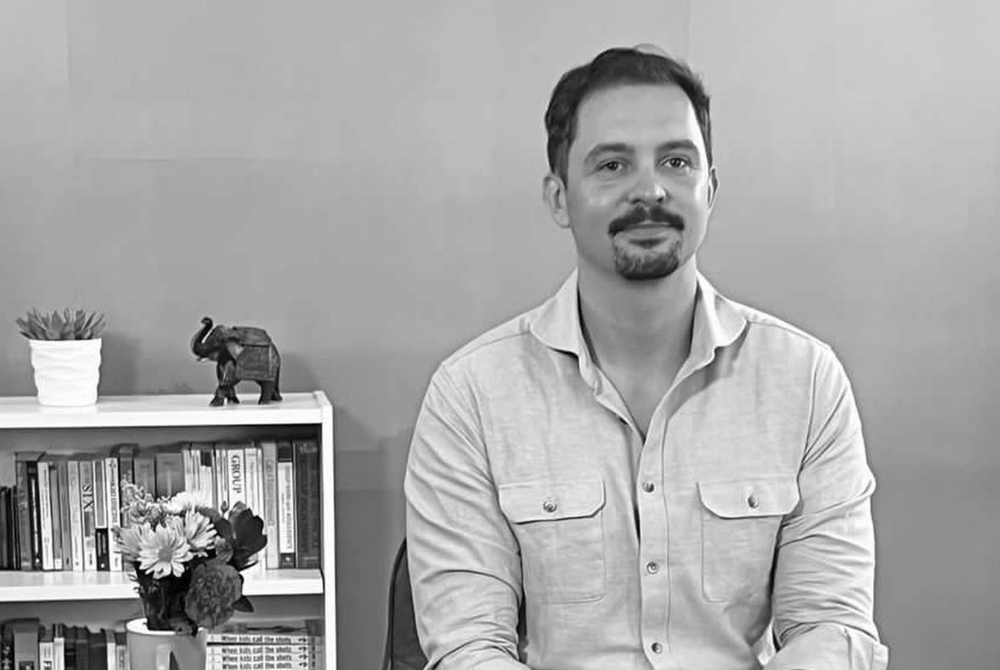

About E Analytics Studio
Dr Karol Nedza
Dr Karol Nedza built E Analytics Studio around a simple idea: most organisations already have data, but very few are using it to understand behaviour, performance, and decision-making properly.
Karol’s background combines PhD-level behavioural science, applied data analysis, research methods, and international consultancy. He has taught psychology, research methods, and data analysis for nearly a decade, completed multiple applied research and consultancy projects, and worked with organisations across healthcare, education, business, and performance settings.
His strength is translating complex human problems into measurable systems — and translating data back into clear, practical insight for decision-makers.
Outside of work, Karol is driven by movement, challenge, and curiosity — from coastal running, lifting, hiking, and surfing to writing philosophical essays and poetry about modern life, identity, and human behaviour. His work is grounded in the belief that the best decisions come from combining rigorous thinking with a life fully lived.





Philosophy
Data should not only describe what happened.
It should help organisations understand what to do next.
That requires more than numbers. It requires clarity of thinking, understanding of context, and systems that remain useful over time.